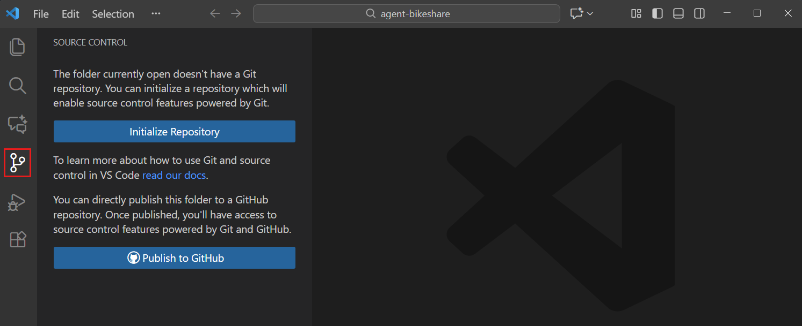
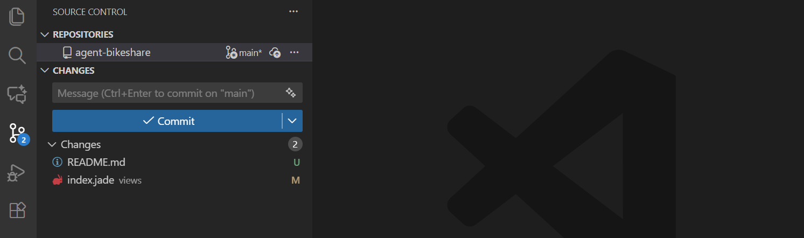
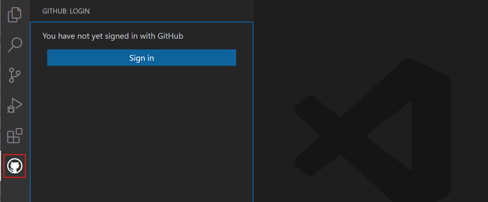

Version Control
If I could turn back time
Cher, If I Could Turn Back Time 1989
Version control tracks changes to your files, lets you undo mistakes, and makes collaboration easy. Once you start using it, you’ll wonder how you worked without it!
This tutorial was stolen from the Version Control with Git by The Software Carpentries and VS Code Source Control by Microsoft lessons.
Overview

You will work on code with other people in your academic career at some point. You can pass the code between people via email or flash drives. However, quickly you will find out that that the email and flash drive method is not very efficient. You will have to keep track of who has the latest version, and you will have to be careful not to overwrite each other’s changes.
Imagine a follwing (corny) scenario: Jimmy and Alfredo have been hired by Ratatouille restaurant to investigate if it is possible to make the best recipes archive ever. They want to be able to work on indexing the prices at the same time, but they have run into problems doing this in the past. If they take turns, each one will spend a lot of time waiting for the other to finish, but if they work on their own copies and email changes back and forth things will be lost, overwritten, or duplicated.
Version control is better than mailing files back and forth:
Nothing that is committed to version control is ever lost, unless you work really, really hard at losing it. Since all old versions of files are saved, it’s always possible to go back in time to see exactly who wrote what on a particular day, or what version of a program was used to generate a particular set of results.
As we have this record of who made what changes when, we know who to ask if we have questions later on, and, if needed, revert to a previous version, much like the “undo” feature in an editor.
When several people collaborate in the same project, it’s possible to accidentally overlook or overwrite someone’s changes. The version control system automatically notifies users whenever there’s a conflict between one person’s work and another’s.
Teams are not the only ones to benefit from version control: lone researchers can benefit immensely. Keeping a record of what was changed, when, and why is extremely useful for all researchers if they ever need to come back to the project later on (e.g., a year later, when memory has faded).
Version control is the lab notebook of the digital world: professionals use it to track changes and work together. Whether you’re coding, writing, or managing data, version control is essential.
Automated Version Control
We’ll start by exploring how version control can be used to keep track of what one person did and when. Even if you aren’t collaborating with other people, automated version control is much better than this situation:

We’ve all been in this situation before: it seems unnecessary to have multiple nearly-identical versions of the same document. Some word processors let us deal with this a little better, such as Microsoft Word’s Track Changes, Google Docs’ version history, or LibreOffice’s Recording and Displaying Changes.
Version control systems start with a base version of the document and then record changes you make each step of the way. You can think of it as a recording of your progress: you can rewind to start at the base document and play back each change you made, eventually arriving at your more recent version.

Once you think of changes as separate from the document itself, you can then think about “playing back” different sets of changes on the base document, ultimately resulting in different versions of that document. For example, two users can make independent sets of changes on the same document.

Unless multiple users make changes to the same section of the document - a conflict - you can incorporate two sets of changes into the same base document.

A version control system is a tool that keeps track of these changes for us, effectively creating different versions of our files. It allows us to decide which changes will be made to the next version (each record of these changes is called a commit), and keeps useful metadata about them, such as who made the change. The complete history of commits for a particular project and their metadata make up a repository. Repositories can be kept in sync across different computers, facilitating collaboration among different people.
Setting Up
Creating GitHub account
If you don’t already have a GitHub account, check the Setting Up section.
Installing Git
VS Code uses the Git installed on your computer.
Check that Git is available with:
git --versionIf you get an error, please see this webpage from The Software Carpentries for installation steps.
Setting up Git
We will use VS Code as our main teaching interface, but Git still needs your name and email once on each computer.
Open VS Code. If needed, use File > Open Folder to choose the folder where you want to work.
You can also open the Command Palette with Ctrl/Cmd+Shift+P and run Open Folder.
Use your own name and email instead of Alfredo’s. For GitHub, it is easiest if this email matches your GitHub account.
Open the terminal in VS Code with View > Terminal or Ctrl/Cmd+` and run:
git config --global user.name "Alfredo Linguini"
git config --global user.email "a.linguini@ratatouille.fr"
git config --global init.defaultBranch mainIf you prefer not to show your personal email in commits, GitHub provides a no-reply email address. See GitHub’s instructions for keeping your email private.
Review these settings anytime with:
git config --list --globalIf you are on Windows, doing this lesson inside WSL usually leads to fewer Git and shell problems. In VS Code, use WSL: New Window or WSL: Reopen Folder in WSL.
Creating a Repository
A repository is a folder whose history Git tracks. We will create one for Alfredo’s recipes, but this time we will do it primarily through VS Code.
- Create a new folder called
recipes. - Open that folder in VS Code with File > Open Folder.
- Open the Source Control view.
- Select Initialize Repository.

Source: VS Code Source Control Quickstart.
After that, VS Code should show that:
- the folder is now a Git repository,
- you are on the
mainbranch, - there are no commits yet.
The same setup from the terminal would be:
mkdir recipes
cd recipes
git init
git statusGit also creates a hidden .git folder to store the repository history. If you delete .git, you delete the history of that repository.
Places to create Git repositories
Usually you want one repository for one project folder. If recipes is already a Git repository, you do not need to create another repository inside recipes/desserts just to track dessert files. The main recipes repository will already track subfolders.
Nested repositories are usually confusing for beginners. If you accidentally run git init inside a subfolder, Git treats that inner folder as a separate repository with separate history.
Tracking Changes
This section is the heart of the lesson. We will use five repeated actions in VS Code:
- Edit files
- Review changes
- Stage changes
- Commit changes
- Repeat
Start in the recipes folder.
Create a new file called guacamole.md in the Explorer and add:
# Guacamole
## Ingredients
## InstructionsSave the file.
In Source Control, you should now see guacamole.md listed under Changes with a U marker for untracked. VS Code also shows these change markers in the Explorer and on editor tabs.
Click guacamole.md in Source Control to open the diff editor. Since this is a brand-new file, the entire file appears as a new addition.

Source: VS Code Source Control Quickstart.
Stage the file by hovering over it and selecting the + button. The file moves from Changes to Staged Changes. This is the key Git idea: staged changes are the ones that will go into the next commit.

Source: VS Code Staging and Committing.
Type a commit message such as Create starter guacamole recipe in the Source Control message box and select Commit.
Now edit guacamole.md again so it looks like this:
# Guacamole
## Ingredients
* avocado
* lemon
* salt
## InstructionsSave the file and return to Source Control. You should now see M for modified.
Click the file again to review the diff. VS Code highlights additions and deletions line by line. This review step is important: get in the habit of checking what changed before you commit.
Stage guacamole.md, write a message such as Add ingredients for basic guacamole, and commit.
Now make one more change by replacing lemon with lime:
# Guacamole
## Ingredients
* avocado
* lime
* salt
## InstructionsSave, review the diff, stage the change, and commit it with a message such as Use lime in guacamole recipe.
At this point you have used the full everyday workflow in VS Code:
- edit in the editor,
- review in the diff editor,
- stage in Source Control,
- commit from the message box.
Umeans untracked: Git sees the file, but it is not included in version control yet.Mmeans modified: the file is tracked and has changed since the last commit.Dmeans deleted: the file was removed and Git noticed.
The matching command-line workflow is:
git status
git add guacamole.md
git commit -m "Create starter guacamole recipe"
git diff
git add guacamole.md
git commit -m "Add ingredients for basic guacamole"
git diff
git add guacamole.md
git commit -m "Use lime in guacamole recipe"
git logCommit message
Which of the following commit messages is most helpful?
"changes""change lemon for lime""use lime in guacamole recipe"
Answer 3 is best. Good commit messages are short, descriptive, and make the change easy to understand later.
Committing multiple files
VS Code also makes it easy to commit related changes from multiple files together.
- Add rough prices to
guacamole.md. - Create a new file
groceries.mdwith ingredient prices from a market. - Review both files in Source Control.
- Stage both files.
- Commit them together with one message.
You might end up with something like:
# Guacamole
## Ingredients
* avocado (1.35)
* lime (0.64)
* salt (2)
## Instructionsand
# Market A
* avocado: 1.35 per unit
* lime: 0.64 per unit
* salt: 2 per kgA good commit message would be Add ingredient prices and market list.
Exploring History
Once you have a few commits, Git becomes more useful because you can look backward. In VS Code, history is mostly visual.
Compare your current file to the last commit
Add one temporary line to guacamole.md, save the file, and open it from Source Control.
The diff editor compares your current file with the last committed version. For most beginners, this is the most important history view to learn first.
If you decide the change was a mistake, right-click the file in Source Control and choose Discard Changes.
From the terminal, you would usually inspect and discard the change like this:
git diff guacamole.md
git restore guacamole.mdView earlier commits
VS Code gives you two helpful history views:
- Timeline: shows the history of one file.
- Source Control Graph: shows the history of the whole repository.

Source: VS Code Source Control Overview.
To use them:
- Select
guacamole.mdin the Explorer and open the Timeline view. - Browse older file versions and commit messages.
- Open the Source Control Graph to see the order of commits in the repository.
This is much easier for beginners than memorizing commit IDs early on.

Source: VS Code Source Control Overview.
The terminal version of these history views is:
git log
git log guacamole.mdRecovering older versions of a file
Suppose you edited guacamole.md and want to get back to the last committed version.
In VS Code:
- Open Source Control.
- Right-click
guacamole.md. - Choose Discard Changes.
That restores the file to its most recently committed state.
If you want to inspect older versions first, use the Timeline for that file and open previous entries before deciding what to restore.
On the command line, the most recent commit is called HEAD. The commit before it is HEAD~1, then HEAD~2, and so on.
Examples:
git diff HEAD guacamole.md
git restore guacamole.md
git restore -s HEAD~1 guacamole.mdYou do not need this syntax for the main VS Code workflow in this lesson.
Getting rid of staged changes
What if you staged a file and then changed your mind before committing?
In VS Code, you can unstage it in several ways:
- click the
-icon beside the file in Staged Changes, - right-click and choose Unstage Changes,
- drag it back from Staged Changes to Changes.
After that, if you also want to throw away the edit entirely, use Discard Changes.
The command-line version is:
git restore --staged guacamole.md
git restore guacamole.mdExplore and summarize histories
Imagine the recipes project has dozens of files and you want to answer questions like:
- Which commit changed
guacamole.md? - When did the ingredient list change?
- What changed in that commit?
In VS Code:
- Use Timeline for file-by-file history.
- Use Source Control Graph for repository history.
- Open commits on GitHub to inspect remote history and diffs.
If commit messages are vague, open the commit diff instead of guessing from the title alone.
Useful history commands include:
git log guacamole.md
git log --patch guacamole.mdIgnoring Things
Some files should not be tracked, such as generated images, temporary logs, or output folders.
Create a few files that you do not want in version control, for example some .png files and a pictures/ directory. In VS Code, they will appear in Source Control as untracked files.
Now create a file called .gitignore in the root of the repository and add:
*.png
pictures/Save the file. The noisy image files should disappear from Source Control, leaving only .gitignore to stage and commit.
This is one of the nicest beginner moments in Git: your change list becomes cleaner right away.
Commit .gitignore so everyone using the repository shares the same ignore rules.
Ignoring only affects files Git is not already tracking. If a file was committed earlier, adding it to .gitignore does not automatically remove it from version control.
The same workflow from the terminal would be:
mkdir pictures
touch a.png b.png c.png pictures/cake1.jpg pictures/cake2.jpg
printf "*.png\npictures/\n" > .gitignore
git status
git add .gitignore
git commit -m "Ignore generated image files"Log files
You wrote a script that creates temporary files like log_01, log_02, and log_03.
Add a rule such as:
log_*to .gitignore.
If you later decide to track one of them anyway, that is an advanced case and is easier from the terminal.
You can override an ignore rule with:
git add -f log_01
git status --ignoredRemotes in GitHub
So far everything has happened on your computer. A remote is a copy of the repository stored somewhere else, usually on a service such as GitHub.
For this lesson, we will use VS Code’s built-in GitHub flow instead of teaching manual remote setup first.
Creating a remote repository
After you have a few local commits:
- Open Source Control.
- Choose Publish to GitHub.
- Sign in through the browser if VS Code prompts you.
- Choose whether the repository should be public or private.
- Let VS Code create the GitHub repository and push your existing commits.
This is the simplest beginner path because VS Code handles both repository creation and the first push.

Source: VS Code Collaborate on GitHub.
The closest terminal-based setup is:
git remote add origin https://github.com/USERNAME/recipes.git
git push -u origin mainUnderstanding remotes
Once published, your repository has:
- a local copy on your computer,
- a remote copy on GitHub.
VS Code will show sync information in the status bar and in Source Control. The most important remote actions are:
- Fetch: check for remote updates without changing your files
- Pull: download and apply remote updates
- Push: upload your local commits
- Sync Changes: do the needed pull/push steps together

Source: VS Code Repositories and Remotes.
origin is the default nickname Git gives to the main remote repository. You do not need to type it in VS Code, but you may still see the name in documentation and terminal examples.
Pushing local changes to a remote
Make one more local commit in VS Code. After committing, VS Code should show that you have outgoing changes.
Use Sync Changes or Push to send them to GitHub. Then refresh the repository page on GitHub and confirm that the new commit appears there.
In the terminal, you would usually do:
git push origin main
git pull origin mainGitHub view of history
On GitHub, open the repository and explore the commits list. You can:
- open a commit to view its diff,
- inspect when changes were made,
- review history without leaving the browser.
This complements the VS Code Graph and Timeline views nicely.
Push vs. commit
A commit saves a snapshot in your local repository. A push sends your local commits to the remote repository on GitHub.
If you ever need to add a remote by hand, the terminal version looks like this:
git remote add origin https://github.com/USERNAME/recipes.git
git push -u origin main
git remote -vThis lesson does not require SSH.
If you later want SSH, the usual flow is:
- Create a key pair with
ssh-keygen. - Copy the public key from
~/.ssh/id_ed25519.pub. - Add it to GitHub under Settings > SSH and GPG keys.
- Use an SSH remote such as
git@github.com:USERNAME/recipes.git.
VS Code’s browser sign-in is simpler for most beginners, so that is our recommended default.
Collaborating
The grand finale: Version control becomes much more valuable when you work with another person. Now, you will collaborate on Quarto websites instead of a single recipe file.
Quarto is a publishing system that can create websites, books, and reports from plain-text source files. It is built on Markdown and Pandoc, so it is easy to learn if you already know Markdown. It getting traction and I bet it will be the standard for the scienctific publishing in the future (no offence LaTeX). You can learn more about Quarto at https://quarto.org.
You will first create and publish your own site. Then you will fork your partner’s repository, make website edits in your fork, and submit those edits for review.
Create and publish your Quarto website
Start by opening the template repository on GitHub and selecting Use this template to create your own website repository. Name it something like recipe-website and choose it to be public. Also, include all branches so you do not need to fiddle with Quarto.
Nice, now you have your own website. Ain’t taht cool?! Clone that repository to your computer in VS Code. The main page of your website lives in the index.qmd file.
Default content of index.qmd is:
---
title: "quarto-website"
---
This is a Quarto website.
To learn more about Quarto websites visit <https://quarto.org/docs/websites>.You can add the guacamole recipe to your website by editing index.qmd and adding the following content or a receipe of your choice.
Quarto pages are still plain-text source files, just like the Markdown files you used earlier. The collaboration ideas are the same, even though the project is now a website instead of a recipe note.
If you prefer the terminal for setup and publishing, a common flow is:
git clone https://github.com/YOUR-USERNAME/recipe-website.git
cd recipe-website
quarto preview
quarto publish gh-pagesFork your partner’s repository
Instead of adding each other as collaborators, use a fork-based workflow. Open your partner’s repository on GitHub and select Fork to create your own copy under your GitHub account.
This is safer and closer to how open-source collaboration usually works. You can make changes freely in your fork, but you still need the original owner to review and merge them.
If you use GitHub CLI, a fork-and-clone flow can look like this:
gh repo fork PARTNER-USERNAME/recipe-website --clone
cd recipe-websiteClone your fork
Now clone your fork of your partner’s website repository in VS Code. Open Source Control, select Clone Repository or run Git: Clone from the Command Palette, paste the URL of your fork, choose a local parent folder, and open the cloned repository in VS Code.
When you clone, Git automatically connects the local copy to your fork on GitHub.

Source: VS Code Source Control Quickstart.
Clone your fork with:
git clone https://github.com/YOUR-USERNAME/recipe-website.git
cd recipe-websiteMake changes to your partner’s website
Now work on your fork of your partner’s Quarto website.
Good beginner changes include:
- updating text on
index.qmd, - improving the
about.qmdpage, - adding a recipe section,
- fixing navigation or headings in
_quarto.yml.
Before you edit anything, pull or sync so your local copy of the fork is up to date.
For this exercise, make your changes on a new branch rather than directly on main. That keeps your work tidy and makes review much clearer.
In VS Code, create a new branch from main, edit one or more .qmd or configuration files, review the diff in Source Control, stage the files, commit with a clear message, and push the branch to your fork on GitHub.
The terminal version usually looks like:
git switch -c partner-edit
# edit files
git add .
git commit -m "Improve partner website homepage"
git push -u origin partner-editOpen a pull request for review
After you push the branch, open a pull request so your partner can review the website changes before they are merged.
You can do this in two ways:
- use the GitHub Pull Requests extension in VS Code, or
- open the pull request directly on GitHub after pushing to your fork.
In either case, use your partner’s original repository main branch as the target, add a short title and description explaining the website edits, and submit the pull request.

Source: VS Code Collaborate on GitHub.
If you use GitHub CLI, you can open the pull request with:
gh pr create --repo PARTNER-USERNAME/recipe-website --base main --head YOUR-USERNAME:partner-editReview, approve, or request changes
Now switch roles and review the proposed website changes. You can:
- inspect the changed
.qmdfiles, - comment on specific lines,
- request changes,
- approve the pull request,
- or reject it for now and ask for revisions.
This is the key moment where collaboration becomes more than simple file sharing. GitHub records the proposed edits, comments, and review decision in one place.
If you use GitHub CLI, you can review a pull request with commands like:
gh pr checkout NUMBER
gh pr review NUMBER --approve
gh pr review NUMBER --request-changes --body "Please revise the homepage text."If you add someone as a collaborator, they can push changes directly to your repository. Only do that if you trust them and you are happy for them to have that level of access.
Forking is safer for this lesson because it keeps the original repository protected and makes the review step unavoidable.
Merge the approved changes and pull them locally
If you approve the pull request, merge it on GitHub.
After the merge, return to your original local repository in VS Code, use Pull or Sync Changes to bring the merged updates into the local copy, and open the Source Control Graph to confirm that the pull request introduced a branch history line that has now been merged back into main.
This is a great visual payoff for the lesson: you can see that the collaboration happened on a branch, then ended as a merge in the history graph.
Back in your original repository, you would usually run:
git checkout main
git pull origin main
git log --graph --oneline --decorateWhat to notice
You should have seen all of these ideas in one workflow:
- creating a repository from a template,
- publishing a Quarto website,
- forking a partner’s repository,
- cloning your fork,
- editing
.qmdwebsite files, - pushing a branch to your fork,
- opening a pull request,
- reviewing and approving or rejecting changes,
- pulling the merged result locally,
- inspecting the merge in the VS Code Graph.
The command-line version of this workflow usually includes commands like:
git clone https://github.com/YOUR-USERNAME/PARTNER-WEBSITE-FORK.git
#do some edits
git switch -c partner-edit
git add .
git commit -m "Improve partner website homepage"
git push -u origin partner-edit
git pull origin mainConflicts
Conflicts happen when two people change the same part of the same file before syncing.
For example:
- collaborator A adds
* put one avocado into a bowl. - collaborator B adds
* peel the avocados
If one person pushes first, the second person may be forced to pull before pushing. If Git cannot combine the edits safely, VS Code will mark the file as conflicted.
Resolving conflicts in VS Code
When a conflict appears:
- Open Source Control and select the conflicted file.
- Open the Merge Editor.
- Compare the current change and incoming change.
- Use VS Code’s buttons to accept one side, accept both, or edit a combined result manually.
- Save the file.
- Stage the resolved file.
- Commit the merge result.
- Push or sync the repository.

Source: VS Code Merge Conflicts.
For this lesson, a good final resolution for guacamole.md would be:
# Guacamole
## Ingredients
* avocado
* lime
* salt
## Instructions
* peel the avocados and put them into a bowl.This merge-editor workflow is much friendlier than trying to memorize conflict markers immediately.
Understanding the conflict markers
If you ever open the raw file before resolving it, Git may insert markers like:
<<<<<<< HEAD
* peel the avocados
=======
* put one avocado into a bowl.
>>>>>>> incoming changeThese markers are Git’s way of saying “I found two competing edits here.” VS Code’s merge tools help you resolve them without editing the markers by hand.
The command-line version usually looks like:
git pull origin main
git add guacamole.md
git commit -m "Merge changes from GitHub"
git push origin mainAfter the merge commit is pushed, other collaborators can pull normally and receive the already-resolved version.
To minimize conflicts:
- Pull frequently from the remote repository.
- Communicate with teammates about who is working on what.
- Make smaller, focused commits.
Licensing
A LICENSE file specifies how others can use your code and data. Without one, default copyright laws apply. Choose a license from the start—even for private repositories—since adding one later requires approval from all contributors who hold copyright.
Use choosealicense.com to find a license. Key considerations include:
- patent rights protection,
- whether derivative works must share source code,
- whether you are licensing code, data, or both.
GitHub also lets you add a license from the browser, as explained here.
Citation
Include a CITATION file to explain how to cite your project:
To reference this project, cite:
Author Name: "Project Title". Publisher, Year.
@online{project-year,
author = {Author Name},
title = {Project Title},
year = {Year}
}Use Citation File Format (CITATION.cff) for automated citation information. GitHub automatically renders CFF files on your repository page. Create one at cff-init.